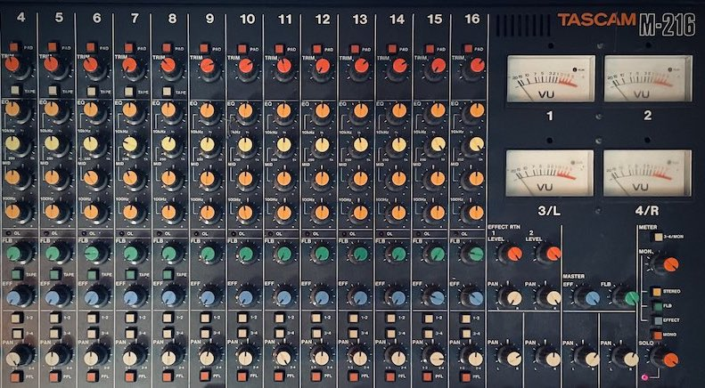

Music Production & Recording with Randy Bergida in Greenpoint, Brooklyn
I’ve always had a deep fondness for creation. I grew up in Indianapolis where we actually had lawns, and I would mow our lawn from a very early age. I would try out different mowing design patterns—sometimes diagonals, other times squares, and maybe even a figure-eight type thing from time to time.
I would build a table, a string guard instrument, paint watercolors... I just loved making things and looking at the outcome. It's the exact same thing with songwriting and production. I just love the creation process and then being able to listen back to it.
In the beginning, it meant recording on one of those handheld cassette recorders—you know, the rectangular ones, maybe a foot or so long with a little handle and a built-in speaker. They could run off batteries or you could plug them into the wall.
I actually still have one in my studio. If you are over at McGolrick Park on Sundays, there’s a person selling cassette tapes, and I noticed they use that exact same 1970s tape deck. Not fancy, not highly sought after—just a beautiful coincidence. But now I realize I am digressing.
From 8-Tracks to The Studios
Yes. So, I loved to create songs, and though listening back on a cassette tape was fulfilling, I really yearned to hear them fully produced out.
To make that happen, I got an old Roland 8-track unit. It was intended to be used with a mini-console, but I used it completely as-is. I menu-dived like crazy just to make it function, and that's how I created some of my very first self-recorded productions.
Then I had the opportunity to record with some legends and I began to soak up their techniques and philosophy:
- Tracking with Larry Crane: Working in an all-tape setting, I learned the craft of performing every single take top to bottom. You want a vocal double? You sing it again.
- Tracking with Ken Lewis: Working with Ken inspired me to get my own digital studio environment dialed in. It was the dawn of the digital age, and suddenly that elite workflow was achievable.
- Mixing with Joel Hamilton: Working with Joel at Studio G absolutely blew my mind. I saw giant, military-grade compressors—massive 4-space rack units—that I had never seen before. I realized that high-end analog flavor was a distinct Brooklyn studio thing, and I fell in love with it.
The Sonic Landscape at Songwriter Factory
That experience kicked off my own vintage analog gear phase. Later, working at The Bunker exposed me to a world of incredible synths and keyboards—I knew immediately I had to get my hands on some too.
When I built out Songwriter Factory here in Greenpoint, I looked at what was practical. I couldn’t fit a massive acoustic piano in the space, but I could get a beautiful vintage Wurlitzer. I can't support a full acoustic drum kit, but drum machines? Oh yeah. Let's find some incredibly unique ones and make things interesting.
In the early days, my process was just capturing and layering. When I look back at those older recordings, I realize that not fully knowing what I was doing actually produced some of the most beautiful, accidental effects. Now I have the control and the ear to get things sounding like a record, but I still pull from those early techniques and that's what makes my work what it is today.
I produce everything from totally organic acoustic records to electro-pop tracks. Below is a mix of the old and the new, but I feel it’s all worth sharing. Some of the tracks here are my own music, and others are talented independent artists that I’ve produced right here at Songwriter Factory. Enjoy!
The Letter Yellow
Skidmore Fountain
Randy Bergida
Alaina Hardy
Little Anchor
Bianca Merkley
Braulio Cruz
Brandon Agustus
Alec Robert Samuel
Alex Kuchta
Ross Edwards
Little Shells
Gina Tolentino
Aly and Randy
New Indiana
Alt Hitman
CUSTOM-TAILORED LESSON PLANS
PRIVATE STUDIO IN GREENPOINT
COMPLIMENTARY INTRO LESSON
CONTACT
Reach out for questions and rates:
Randy Bergida | 347-645-3721
songwriterfactory@gmail.com